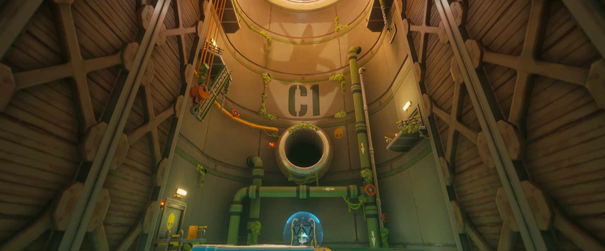
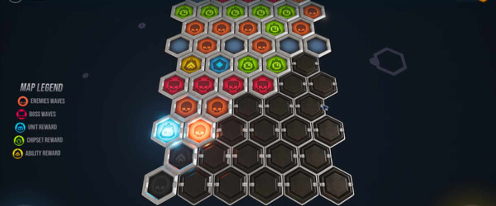
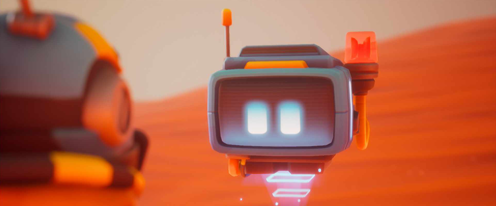

Immerse yourself in a dynamic and variable environment that makes TEOM's gameplay fast-paced and engaging. On the battlefield, you can annihilate enemy hordes through interactable elements and arcade mechanics.


Throw yourself into a wild climb through a procedural map, until you defeat the Boss of each biome. Don't be discouraged if you are defeated and your inventory is lost. Thanks to rogue-like mode, there are no limits to replayability!!!
Accompany Aiden and his friends on this adventure in a world guarded by dangerous EUTONS. Collect valuable information on your journey. Will you be able to reconstruct the origins of the TEOM universe and stop the Mainframe?
